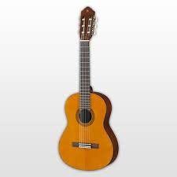
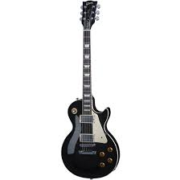

All About Guitars
All About Guitars adalah website yang memuat informasi tentang gitar. Informasi tentang gitar, yaitu seperti deskripsi gitar, kunci gitar, dan juga bermacam-macam merek gitar. Website ini dikelola oleh saya sendiri.
All About Guitars adalah website yang memuat informasi tentang gitar. Informasi tentang gitar, yaitu seperti deskripsi gitar, kunci gitar, dan juga bermacam-macam merek gitar. Website ini dikelola oleh saya sendiri.
Gitar merupakan salah satu dari sekian banyak alat musik yang ada di dunia ini. Saat ini, sudah banyak orang yang dapat memainkan gitar. Mudah dibawa, tidak ribet, dan dapat mengisi waktu senggang, itu adalah alasan yang membuat banyak orang tertarik untuk bermain gitar. Gitar ini memiliki senar atau dawai yang dapat dipetik. Sehingga dengan petikan pada senar itu, maka akan keluar suara yang bernada. Gitar termasuk alat musik harmonis, karena suaranya dapat menghasilkan nada. Gitar dibuat dari berbagai jenis kayu. Jenis kayu yang bagus untuk gitar, yaitu Mahoni, Maple, dan juga Rosewood. Untuk senar pada gitar, umumnya terbuat dari nilon maupun baja. Nilon untuk gitar akustik dan baja (biasa disebut string) untuk gitar elektrik.
Gitar akustik adalah gitar yang memiliki lubang pada bagian badannya. Gitar dengan badan berlubang disebut juga dengan gitar hollow body. Gitar akustik ada yang menggunakan senar nilon dan ada yang menggunakan senar string. Biasanya, gitar akustik nilon adalah gitar akustik murni tanpa menggunakan listrik. Sedangkan, gitar akustik string biasanya adalah gitar akustik elektrik yang menggunakan listrik. Gitar akustik biasanya digunakan oleh orang yang pertama belajar gitar. Faktor harga dan kemudahanlah yang membuat gitar akustik lebih cocok untuk belajar. Tetapi, gitar akustik juga banyak digunakan pada genre musik country, folk, classic, maupun jazz.
Gitar elektrik adalah gitar yang menggunakan listrik. Dengan bantuan listrik, suara yang dihasilkan oleh gitar elektrik dapat dimodifikasi. Contohnya dengan bantuan amplifier, maka suara gitar elektrik dapat lebih keras dibandingkan dengan gitar akustik. Dulu gitar elektrik menggunakan badan berlubang atau hollow body saja. Sekarang, gitar elektrik telah memiliki 2 jenis body, yaitu hollow body dan solid body. Solid body guitar adalah gitar yang berbadan padat dan tidak memiliki lubang sama sekali. Gitar elektrik lebih banyak digunakan untuk genre musik seperti blues, country, reggae, jazz, rock, dan lain-lain.
